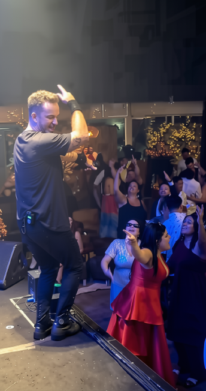
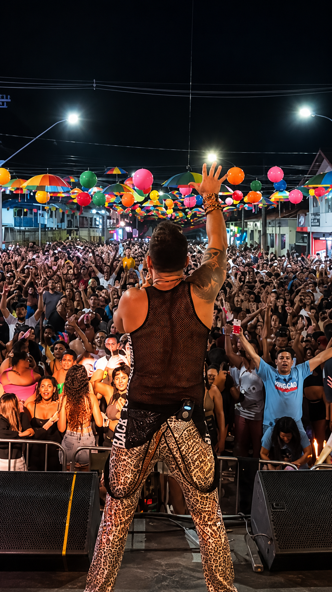

SINTA ESSA
ENERGIA
Música, presença e energia para fazer a noite acontecer.
Dois artistas. Uma identidade.
Um show pensado para conectar pessoas.
A harmonia vocal entre Jhony e Maura é o coração de um espetáculo vibrante e envolvente. Com cumplicidade de palco e carisma contagiante, a dupla transforma cada apresentação em um momento marcante onde a plateia não é apenas espectadora: ela canta, vibra e participa ativamente.
Afinação & Harmonia
Vozes que se complementam e sustentam com precisão cada dinâmica e emoção do espetáculo.
Versatilidade Musical
Capacidade artística de transitar com maestria por diferentes estilos, ritmos e gerações.
Energia de Palco
Presença contagiante que impulsiona a noite e faz a pista crescer do início ao fim.
Conexão Humana
Interação genuína com os convidados, criando uma atmosfera calorosa e acolhedora.
A noite começa. A pista responde.
O show cresce.
Mais do que uma lista de músicas, o show possui uma narrativa dinâmica que acompanha a temperatura dos convidados.
Acolhimento & Presença
O início da noite pede presença, elegância e conexão. Uma ambientação sonora envolvente que recepciona os convidados e prepara o clima.
A Virada da Noite
A energia sobe. O repertório acompanha a vibração do público e a pista começa a ganhar vida com hits que atraem todas as idades.
O Ápice & Apoteose
Todo mundo canta. Todo mundo dança. O show chega ao seu momento máximo de euforia e celebração, terminando em clima de bis.


Casamentos, 15 anos, formaturas, aniversários e diferentes celebrações ganham uma atmosfera própria quando a música encontra o público. Cada ocasião tem sua essência, e o espetáculo dialoga com a identidade da sua festa.
Você cuida dos convidados.
Nós cuidamos do show.
Profissionalismo que garante tranquilidade total para quem contrata e para o cerimonial.
Banda & Artistas
Vocalistas com apoio de músicos experientes no palco para entregar uma sonoridade encorpada e cheia de dinâmica.
Sonorização
Equipamentos calibrados para garantir inteligibilidade vocal cristalina e pressão sonora no volume adequado para o espaço.
Iluminação Cênica
Clima visual sintonizado com o andamento musical, destacando os momentos solenes e potencializando os momentos de euforia.
Produção & Equipe
Profissionais de suporte e roadies dedicados à montagem, passagem de som e execução sem imprevistos.
Alinhamento Prévio
Sintonia direta com a organização do evento e cerimonialistas para respeitar horários e o fluxo planejado da noite.
Pontualidade & Compromisso
Chegada e preparação com antecedência técnica, garantindo que tudo esteja pronto antes da abertura das portas.
Uma banda.
Muitas atmosferas.
A pista muda. O repertório acompanha. Da sofrência ao hit da pista, uma viagem sonora que levanta qualquer evento.
Sua data pode ser o
próximo grande show.
Consulte a disponibilidade para seu evento e receba atendimento direto com a produção da banda Jhony & Maura.
Verificar Disponibilidade
Preencha os dados e receba resposta rápida:
Informações para Contratação
Com quanto tempo de antecedência devo reservar a data?
Como a banda atende celebrações exclusivas com montagem e alinhamento prévio, datas de sábados e períodos de alta demanda costumam ser reservadas com meses de antecedência. Recomendamos consultar a disponibilidade assim que definir a data do seu evento.
A banda atende eventos fora da cidade ou em outros estados?
Sim. A estrutura de Jhony & Maura viaja para diferentes regiões e cidades, com logística coordenada previamente junto à produção do contratante ou cerimonial.
Como funciona o alinhamento com cerimonial e produção local?
Nossa equipe entra em contato com antecedência para alinhar cronograma, rider técnico, horários de montagem, passagem de som e dinâmicas especiais da programação.
A banda pode fornecer sonorização e iluminação?
Dispomos de soluções completas de som e iluminação profissional adequadas ao porte do local, ou podemos nos conectar à infraestrutura contratada para o evento sem dificuldades técnicas.